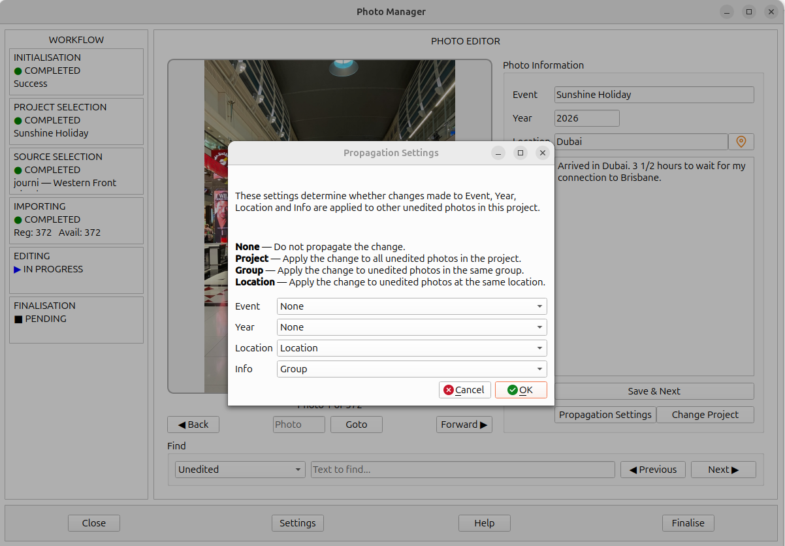

When working through a photo collection, you will often find that information applies to more than one photograph. Several photographs might belong to the same event, have been taken in the same year, or have been taken at the same location.
Entering the same information for each photograph individually would be repetitive and time-consuming. Propagation allows Photo Manager to apply a change to other eligible photographs automatically, reducing repetitive work and helping keep the information consistent throughout a project.
You can control how propagation works by choosing a setting for each of the four Photo Details fields: Event, Year, Location and Info. These settings determine whether a change applies only to the current photograph or is also applied to other photographs in the project.
In the Photo Editor, click Propagation Settings to open the settings editor.

Each of the four Photo Details fields can have its own propagation setting. The available options are None, Project, Group and Location.
The change to this field is not propagated to other photographs.
The change is propagated to all unedited photographs in the project.
The change is propagated to unedited photographs assigned to the same group by the importer.
The change is propagated to unedited photographs assigned to the same location by the importer.
The Group and Location associated with each photograph are determined by the importer when the project is created. Each importer uses its own rules and algorithms to assign these values.
Location may be determined using GPS location data associated with a photograph, where such data is available. The way groups and locations are assigned depends on the importer used to create the project.
Propagation uses these importer-assigned values to determine which photographs are eligible to receive a change.
When a project is created, the importer also sets the initial propagation settings for that project. These settings determine how changes to Event, Year, Location and Info are applied to other eligible photographs.
You can review and change these settings at any time using the Propagation Settings button in the Photo Editor.
Click OK to save changes to the propagation settings. Saving these settings updates the settings file; it does not immediately propagate any photo details.
Propagation occurs when you click Save & Next after editing a photograph. Photo Manager saves the current photograph's details to its EXIF UserComment and applies the configured propagation rules to other eligible photographs.
Changing or saving the propagation settings alone does not propagate any information. The rules take effect when photo details are saved using Save & Next.
Propagation applies only to unedited photographs. For this purpose, an unedited photograph is one whose EXIF data has not yet been written to the photo file by Photo Manager.
When you click Save & Next, Photo Manager writes the current photograph's details to its EXIF UserComment. That photograph is then considered edited and is no longer eligible to receive propagated changes from subsequent photographs.
For example, if you save a photograph with the Event set to Sunshine Holiday, a later change to the Event on another photograph cannot propagate back to update the first photograph. Its details have already been saved.
This is important when working through a project: propagation can update photographs that have not yet been processed, but it cannot revise photographs whose EXIF data has already been written.